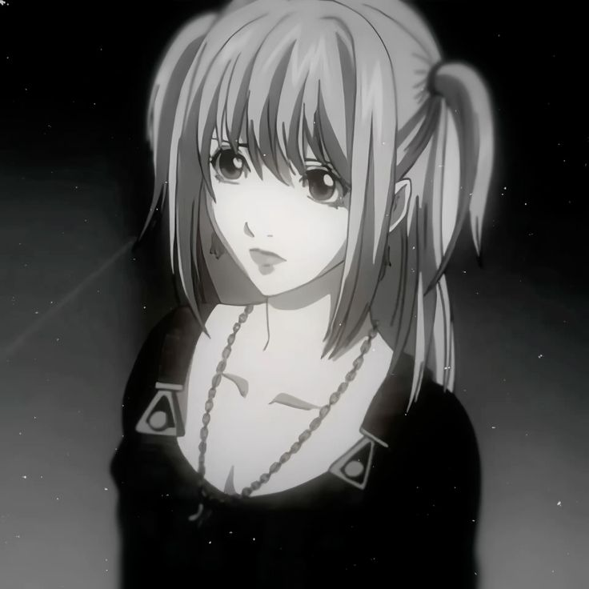

Misa Amane is one of the most fascinating and tragic figures within the world of Death Note.
Her story, marked by personal loss, unyielding devotion, and the corruptive allure of power, serves as a counterpoint to the cold, calculating nature of Light Yagami and underscores many of the series’ central themes.
A Shattered Past and a Fateful Gift

Misa’s journey begins with profound personal tragedy. As a popular idol popularized by her vivacious public persona, she enters the series with a history marked by loss—loss that leaves her vulnerable and hungry for a cause that can meaningfully redress the wrongs in her life.
The brutal murder of her parents thrust her into a world where justice seems absent, and in her grief, the emergence of Kira’s vigilantism offers a seductive promise of retribution. This personal vendetta against the cruelty of life lays the foundation for her later actions.
When Misa comes into possession of a Death Note—a supernatural artifact that grants the power to control life and death—she sees it as a tool to balance the scales, not merely for herself but for a society that has failed her.
In accepting the Death Note and the accompanying shinigami eyes, which offer her the ability to see a person’s name and lifespan at the cost of her own vitality, she willingly surrenders a part of her humanity to follow a dark path in the name of love and justice.
The Duality of Devotion and Manipulation
Misa’s relationship with Light Yagami is at the heart of her character arc. Her unyielding devotion to Light—whom she identifies with Kira—transforms her into both a loyal disciple and a pawn caught in the intricate machinations of a much larger ideological game.
With every action, Misa blurs the line between genuine affection and exploitable naivety. While her adoration is heartfelt and appears to stem from a sincere desire for a better world, it is simultaneously this same love that renders her vulnerable.
Light, with his masterful manipulation, exploits her devotion to further his own ambitions. In this dynamic, Misa embodies the inherent risk in idealizing a figure who operates in the murky territory between vigilante justice and authoritarian control.
Her character starkly reminds us that even the purest of intentions can be tainted by the intoxicating lure of absolute power.
A Counterpoint in a World of Shadows
Misa’s vibrant, almost flamboyant personality serves as a striking counterpoint to Light’s impassive and calculated persona. While Light carves his path with a cold, utilitarian logic, Misa’s actions are driven by raw emotion—a blend of love, anger, and unrestrained passion.
This juxtaposition is vital to the narrative, as it forces the audience to confront the idea that the quest for justice—a concept that should ideally be devoid of personal bias—can become overwhelmingly subjective when intermingled with deep-seated emotional wounds.
In her willingness to commit acts of violence for the sake of love, Misa challenges the viewer to question whether there is ever a clear demarcation between righteousness and sin. Her moral ambiguity mirrors the broader thematic concerns of Death Note: that the path to absolute justice often meanders through a landscape of personal sacrifice and inevitable moral decay.
The Tragic Cost of Idolization
Beyond her narrative function as a tool for Light’s ambitions, Misa Amane represents a broader commentary on the dangers of idolization and celebrity worship.
In a world where personal loss and the longing for recognition often lead to self-destruction, Misa’s transformation from a celebrated idol to a shadow of her former self is both heartbreaking and cautionary.
Her character illustrates how the intoxicating lure of adoration, when mingled with the desire for retribution, can drive one to relinquish their identity and succumb to a cycle of self-sacrifice.
Misa’s uncritical adoration of Light illustrates the perilous nature of idolizing any figure without questioning the underlying motives—a theme that resonates not only within the series but also in the broader context of modern society, where media glorification often obscures critical judgment.
Legacy and Narrative Resonance
In the grand tapestry of Death Note, Misa Amane’s relevance cannot be overstated. She is more than just a secondary character or a tool within Light’s grand design—she is a living embodiment of the series’ core contradictions.
Her tragic arc, marked by an overwhelming need for validation and a willingness to sacrifice her autonomy in the name of love, forces the audience to grapple with the uncomfortable truth that even those who seem pure at heart can be corrupted by the mechanisms of power.
With her flamboyance and vulnerability, Misa enriches the narrative, adding layers of complexity to the exploration of morality, justice, and the human condition.
Misa invites us to reflect on how personal tragedy can shape one’s understanding of justice, and how the seductive promise of power can lead individuals to relinquish their very selves.
Her journey is a stark reminder that in the quest to right wrongs, the path is often fraught with moral peril and irrevocable loss.
By challenging the audience to see beyond the black-and-white dichotomy of right and wrong, Misa Amane remains an indelible and thought-provoking presence, one whose impact lingers long after the final page of Death Note is turned.
Conclusion
Beyond her specific narrative function, consider how Misa’s character raises broader questions: How does our perception of justice change when it is intertwined with personal loss?
What does it mean to love someone so deeply that you lose sight of your own identity?
These are the layers of inquiry that Misa Amane’s story opens up, inviting us to explore not only the mechanics of power and manipulation within Death Note, but also the enduring human struggles with identity, morality, and the cost of our deepest emotions.